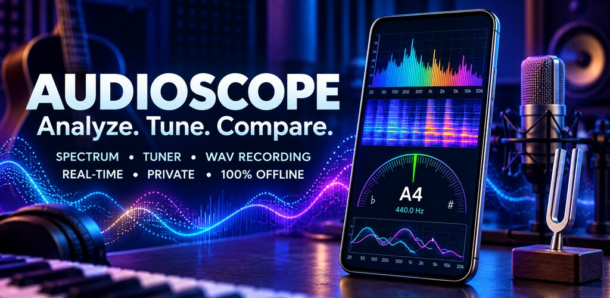

Real-time spectrum
FFT spectrum with dominant frequency, peak hold, cursor readout, zoom and linear or logarithmic scale.
AudioScope Music Lab is an Android toolkit for sound analysis and music practice. It works completely offline: no account, no servers and no internet permission.

From checking whether a machine sounds different today to tuning a bass or measuring how long a note rings.
FFT spectrum with dominant frequency, peak hold, cursor readout, zoom and linear or logarithmic scale.
Scrolling waterfall view with selectable color palettes. Pause it, read any point and save it as an image.
RMS and peak in dBFS, clipping indicator and ten octave bands from 31.5 Hz to 16 kHz.
Save any measurement as a reference: a fan when new, an empty room, a guitar with fresh strings.
Overlaid spectra, level change per band, frequencies that appeared or disappeared, and warnings when two measurements are not comparable.
Uncompressed WAV audio, CSV and JSON data, and images of your charts, shared only where you choose.
Note, octave and cents with presets for guitar, bass, ukulele, violin, viola and cello, plus your own tunings. A4 reference is adjustable.
Hold a note and see how well it stays in tune: average and maximum deviation and time within tolerance.
Level and tuning of the first twelve harmonics, and how long a note rings with its 20 dB and 40 dB decay times.
Sine, square and triangle waves, white and pink noise, and frequency sweeps. Always starts at low volume.
Sample-accurate clicks with tap tempo, subdivisions, accents, progressive tempo increase and presets.
Record takes, loop a section, add markers and notes, and compare two performances.
While the Google Play listing is being prepared, you can install the app directly from its APK file.
The app does not request internet access, so Android itself prevents it from sending anything anywhere.
Measurements made with the phone's microphone are approximate. Response, gain and processing vary by device. This app does not replace a certified sound level meter.
Levels are shown in dBFS, the digital level relative to the maximum the phone can record. An estimated dB SPL value appears only if you calibrate against a reference meter. What the app does best is compare: two measurements taken with the same phone, in the same place, with the same settings.
Write to feedback@fab-apps.com.